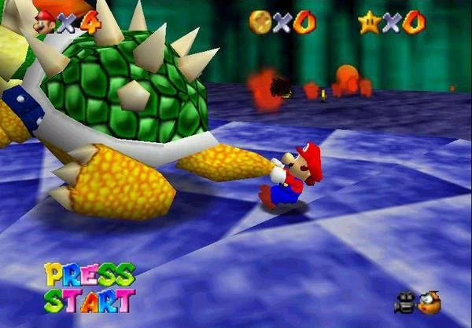
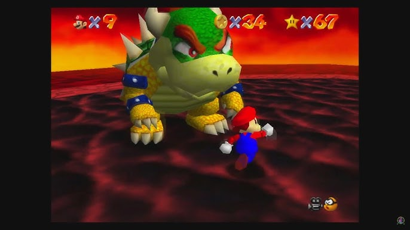

Argumento
Super Mario 64 comienza con una carta de la Princesa Peach en la que invita a Mario a su castillo para comer un pastel que ella misma preparó para él. Cuando él llega, Mario se da cuenta de que Bowser ha invadido el castillo y encerrado a la Princesa y sus sirvientes dentro de él usando el poder de 70 de las 120 Estrellas de Poder del castillo. Muchas de las pinturas del castillo son portales hacia otros reinos, en los que las tropas de Bowser cuidan las estrellas. Mario debe buscar los portales y entrar a ellos para recuperarlas. A medida que va encontrando más estrellas, Mario logra tener acceso a más partes del castillo, llegando a tener tres batallas con Bowser al conseguir 8, 30 y 70 estrellas. Tras vencer a Bowser por tercera vez, Peach es rescatada y el poder de las estrellas del castillo es recuperado. Peach recompensa a Mario horneándole el pastel que le había prometido.

Jugabilidad
Super Mario 64 es un videojuego de plataformas 3D donde el jugador controla a Mario a través de varios niveles. Cada nivel es un mundo cerrado en el que el jugador es libre de explorar a su antojo sin limitaciones de tiempo. Los niveles están llenos de enemigos que atacan a Mario así como criaturas que lo ayudan tales como los Bob-Omb Buddies. El jugador debe reunir las estrellas de los niveles, aunque algunas estrellas solo aparecen tras realizar cierta tarea, a menudo indicadas por el propio nombre de la estrella. Estos desafíos son variados, y van desde derrotar a algún jefe, competir en una carrera, recolectar monedas, resolver acertijos y puzzles... A medida que se van obteniendo más estrellas, nuevas áreas del castillo son accesibles. El jugador necesita cierta cantidad de estrellas para poder enfrentarse a los Bowsers del videojuego en niveles especiales y conseguir las llaves que éstos dan al derrotarlos para continuar hacia otra planta del castillo.
Algunos niveles contienen las gorras especiales que otorgan a Mario una serie de cualidades que le ayudarán en su aventura. La Gorra Voladora permite a Mario volar durante un tiempo, es la gorra que más dura y se encuentra en los Bloques rojos; ésta gorra puede utilizarse junto con los cañones, su efecto será el mismo pero el jugador podrá llegar mucho más alto y más lejos. La Gorra de Metal permite a Mario volverse metálico y como consecuencia los enemigos, el fuego y el gas tóxico no le harán ningún daño, aunque sí le hará daño las caídas, aparte de que podrá caminar por el fondo del agua y atravesar corrientes de aire o de agua sin problema, con la desventaja de que es más pesado, reduciendo la altura de sus saltos y haciendo que se hunda más rápido en la arena movediza; es la gorra que menos dura y se encuentra en los Bloques verdes. La Gorra Invisible permite a Mario volverse invisible y como consecuencia, los enemigos no lo verán y no lo dañarán al igual que el fuego, aunque sí le afectarán las caídas; también puede atravesar ciertas paredes y muros; esta gorra dura más que la Gorra Metal pero menos que la Gorra Voladora, y se encuentra en los Bloques azules.

Bowsers
| Nivel | NºBowser |
|---|---|
|  | Primer Bowser |
|  | Segundo Bowser |
 |
Tercer Bowser (Final) |